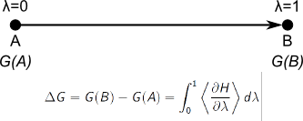
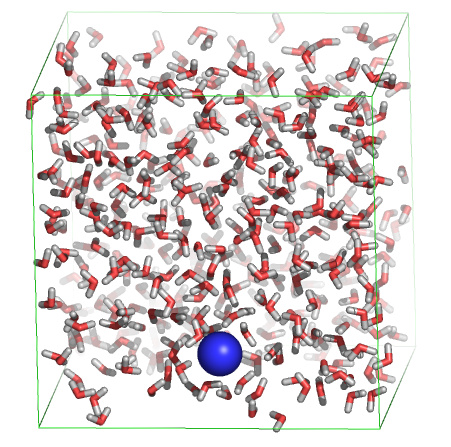

Practical 8: Free energy calculations
A. The free energy "slow-growth" method
Molecular simulations can be carried out to gain either dynamical or
energetical information on the simulated system. Today we'll focus on
different ways to extract energies and free energies from simulations.
One way to gain access to free energies by simulation is to perform
so-called free-energy perturbation (FEP) simulations. In such
simulations, the system is gradually "morphed" from one state to
another (let's say from state "A" to state "B"), during which the
effect of this perturbation onto the free energy is monitored. In
practice, this is achieved by defining a morph parameter lambda, which
is defined to be zero in the initial state (A), and one in the final
state (B). By collecting the derivative of the potential energy with
respect to lambda during the simulation, and by integrating over
lambda afterwards, we gain access to the free energy.

Go back to Contents
B. Solvation free energy of a sodium ion in water

We are now going
to use this procedure to calculate the free energy of solvation for a
sodium ion in water. For this, we'll slowly create a sodium ion in a
water box. In order to start the simulation, download the
starting coordinates, the
topology, and the MD parameter file first.
First have a look at the starting structure:
pymol start.pdb
In pymol, type:
show cell
show spheres, resn na
Note that the sodium ion is already "present" in the starting
structure. Now have a look at the topology "na.top", with 'xedit',
'nedit', 'more' or 'less', and look for the line containing "Na" under
"[atoms]". You'll notice that two states (A and B) are defined, with
charge 0 and 1, respectively. This means that during the simulation,
the charge of the sodium ion will be slowly switched on.
Now start the simulation:
gmx grompp -f fep -c start.pdb -p na -maxwarn 1
gmx mdrun -v -c charged.gro
Analyse the free energy change by:
xmgrace dhdl.xvg
In order to compute the free energy, we must integrate dG/dlambda over
dlambda. Instead, we have dG/dlambda as a function of time. This is
not a problem, as we know that lambda changed from0 to 1 during this
time (10 ps). So instead, we can integrate the curve over time, and
divide the obtained value by ten to derive the desired free energy.
To integrate, under "Data", select "Transformations", followed by
"Integration", and press "Accept".
Question:
The experimentally observed solvation free energies for sodium range
from -365 to -372 kJ/mol. How does the obtained value correspond to
that?
Instead of integrating dG/dlambda, we can also compare the initial and
final values of the potential energy of the system:
gmx energy
Select "Potential", followed by "0" (and, if necessary, an extra "enter").
xmgrace energy.xvg
Subtract the initial value from the final value.
Question:
What value do you get? Why is this value so much larger (in absolute
value) than the free energy difference obtained by integrating
dG/dlambda?
One important check in simulations in general and in free energy
simulations in particular is to make sure that the answer has
converged. In order to do so, we can either perform a longer (or
shorter!) simulation, and compare the result to the original, or we
can perform the backward transition to see if the free energy
difference is the opposite of the forward transition. In this
practical, we'll do both. First, we'll carry out the backward
transition. Copy the MD parameter file to incorporate the changes:
cp fep.mdp back.mdp
and open "back.mdp" in your favorite editor (xedit, nedit, emacs,
kate, vi)
to make the following changes:
First search for "Free energy", then change "init-lambda" to 1 and
change delta-lambda to "-0.0002". Now we can start the backward
simulation. For this, we'll use the final structure of the previous
simulation (charged.gro) as initial structure:
gmx grompp -f back -c charged.gro -p na -maxwarn 1
gmx mdrun -v
And analyse the free energy change using xmgrace. Remember that we now
changed lambda from one to zero, meaning that if we integrate over
time, we should divide the obtained value by -10 instead of by 10.
Question:
What value do you get? How does this value compare to the free energy
change for the forward simulation? Would you consider the obtained
value for the solvation free energy sufficiently converged?
Question:
If we take the forward and backward
simulation together, is the total free energy change positive or
negative? Which of the two should it have been?
As stated above, another way to check convergence is to perform a
longer simulation and see if the free energy change remains the same
as compared to a shorter simulation. For this, open "fep.mdp" in your
favorite editor. Change "nsteps" from 5000 to 50000, and
"delta-lambda" from 0.0002 to 0.00002, and repeat the forward
transition:
gmx grompp -f fep -c start.pdb -p na -maxwarn 1
gmx mdrun -v
Question:
Is the obtained free energy very different as compared to the shorter
simulations? What would you consider an appropriate length for this
type of simulation?
Go back to Contents
Further references:
Books:
- Editors: Chipot C. , Christophe A. et al., Free Energy Calculations , Springer Series in Chemical Physics, Vol. 86, [link] .
Advanced reading:
- R. W. Zwanzig, High Temperature Equation of State by a Perturbation Method. I. Nonpolar Gases J. Chem. Phys. 22: 1420 (1954). [link]
- Goette M, Grubmuller H, Accuracy and convergence of free energy differences calculated from nonequilibrium switching processes. J. Comp. Chem. 30: 447-456 (2009). [link]
Go back to Contents